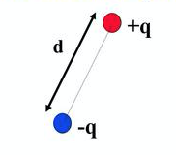

何謂波賽爾因子(Purcell Factor)?
April 17,2017
1.什麼是Purcell Factor？
波賽爾因子
是用來描述不同環境下發光分子自發性輻射（Spontaneous Emission Rate）的增加程度。一般來說，Purcell Factor常用在討論發光分子或雷射共振腔。自發性輻射（Spontaneous Emission）是原子在激發態(excited state)時，原子中的電子從高能階躍遷至低能階的同時，會輻射出一顆光子(photon)。而自發性輻射率（Spontaneous Emission Rate）是代表單位時間內，處與激發態的原子回到基態(ground state)時的個數的比例常數，簡單說就是它正比於單位時間內放出的光子個數。所以當討論發光分子，Purcell Factor可表示為發光分子在環境中的功率與在真空中功率的比值;若用在光學雷射共振腔的描述，則表示為
，
是發光波長，n是材料折射率，Q是品質因子(quality factor)，代表一個週期內腔體儲存的能量與散失的能量的比值。
是雷射模態體積(mode volume)，代表腔體內單位體積能存在的模態個數。由上式可知
與
成正比，與
成反比，也常利用這兩種特性來設計共振腔。然而在此我們不深入討論雷射共振腔。
2.如何計算Purcell Factor？
很簡單，就是算功率。由電動力學中的波印停理論(Poyting Throrem)可知:
(以下粗體均為相量式(phasor)，含空間中相位變化的資訊，省略時間項
)
，
上式中，左式為電流源的功率，等於右式中環境吸收的功率加上能量散出觀測面的功率，遵守能量守恆定律。 所以只要算出上式中左式或右式就能知道發光分子的功率。接下來直接討論左式。
在電磁理論中，通常把發光分子用電偶極子(electric dipole)來近似，而電偶極矩
(electric dipole moment)定義為
，

把電偶極矩(electric dipole)對時間做一階微分再經簡單處理(推導略)可得電偶極子的電流密度
，帶入上式左式(
是electric dipole位置)得：
，
有此可知，我們要解的就是電偶極子(electric dipole)所在位置的電場
。一旦知道電偶極子(electric dipole)所在位置的電場就能求出它的功率。然而Purcell Factor是電偶極子環境中與真空中功率的比值(
/)，而有解析解。
接下來討論電偶極子(electric dipole)在真空中的功率
為何。
算方法有兩種：
1.用時間平均的波印亭相量(Time-averaged Poynting vector)對封閉曲面(包含電偶極子在內)做面積分。
2.直接求電偶極子(electric dipole)所在位置的電場。
法1的物理意義是求單位時間內發散到無窮遠的能量，但僅適用於無其他材料的狀況下;法2是不管在真空中或有其他材料存在時都適用，是一種通用的方法，所以在此討論法2。
step1:
電磁理論中滿足以下亥姆霍茲方程(Helmholtz equation)中的解
稱為scalar Green function，其物理意義就是脈衝的響應方程式：
，
step2:
但在討論電磁場時會變得比較複雜，因為空間中的電場變成是點源極化方向(polarization)的函數，簡單講就是電偶極子(dipole)x、y、z三個極化方向，會各自產生一組對應的
,
,
。假設點源極化方向為i (i=x, y, z)，則可表示：
，
由此可知，一個極化方向對應三組分量(component)，一共有三個極化方向，所以G是一個3x3的矩陣。此時的G稱為dyadic Green function，就是所謂的張量(tensor)。用更簡潔的方法表示為：
，
step3:
再把上式中兩邊跟
做內積，對電流源做體積分：
，
比較均勻介質中電場波動方程可得(在Lorenz condiction下)：
，
where
，
由此可知，電場可以由點電流源和Dyadic Green function做線性疊加(linear superposition)而得。
再把值代入
所以Purcell Factor為：
。
3.總結
波賽爾因子(Purcell Factor)在電磁理論計算中是一種量測的指標，能反應出光學近場(遠小於一個波長的距離)的資訊，能應用在近場光學顯微技術也廣泛運用在螢光分子週期造影技術(Fluorescence-lifetime imaging microscopy)等等，是一種得知光學近場的重要工具。
參考資料： 1.Classical Electrodynamics John David Jacson